在 Spring Tool Suite 4 中导入和配置项目
首先，下载该项目的压缩档並解压缩。
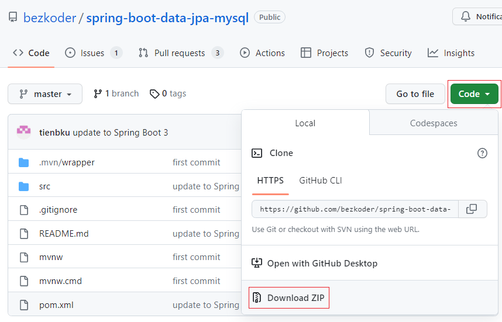
在 Package Explorer 中点 Import projects 或点击 File > Import 然后选择 Existing Maven Projects。
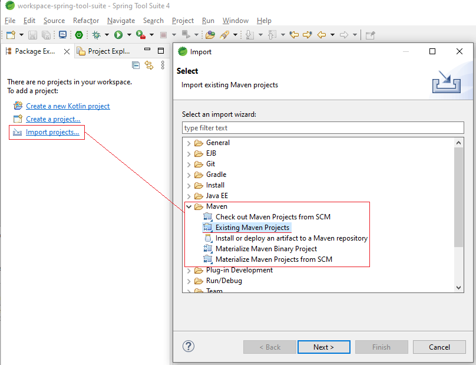
选择您解压项目的文件夹然后选择它。
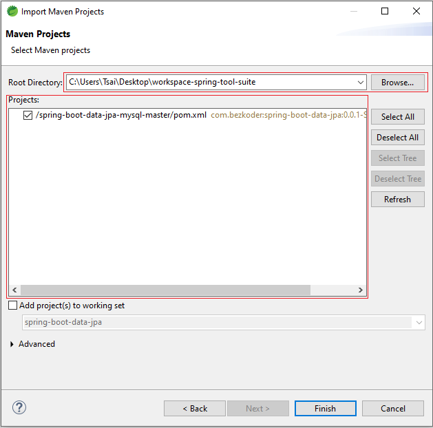
打开位于 src/main/resources 的 application.properties 文件，并根据您的 MySQL 数据库提供URL、用户名、密码和 dialect 进行适应。确保您的 MySQL 数据库已启动。
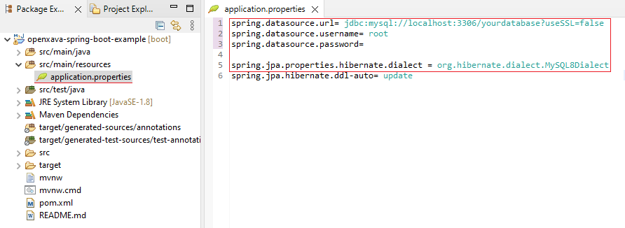
- 在项目上右键 > Maven > Update Project
- 在项目上右键 > Run As > Maven Install
- 在项目上右键 > Run As > Spring Boot App
- 确保 MySQL 数据库已启动
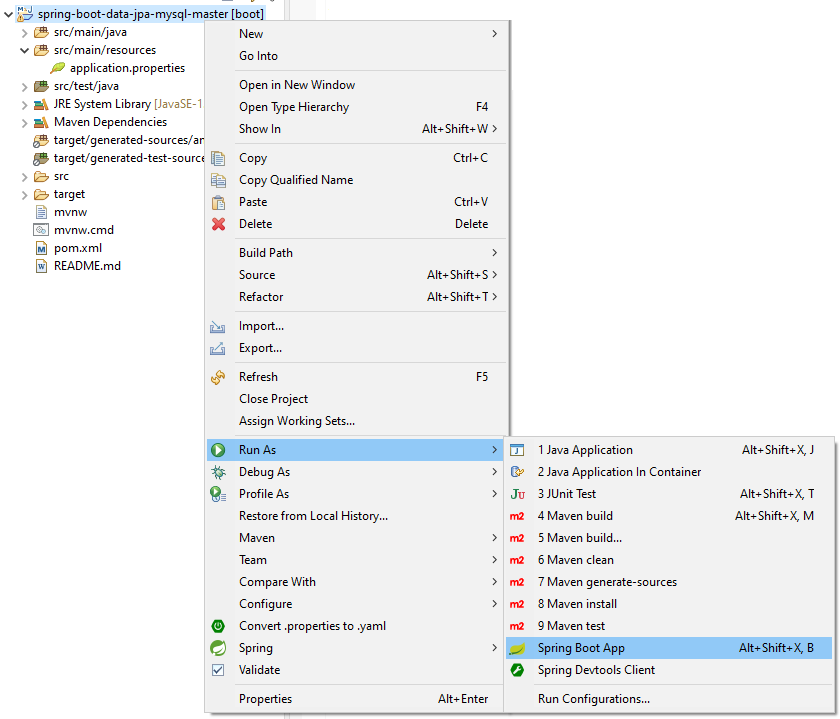
手动在您的 MySQL 数据库中创建一些记录：
INSERT INTO `yourdatabase`.`tutorials` (`id`, `description`, `published`, `title`) VALUES ('1', 'description 1', 0, 'title 1');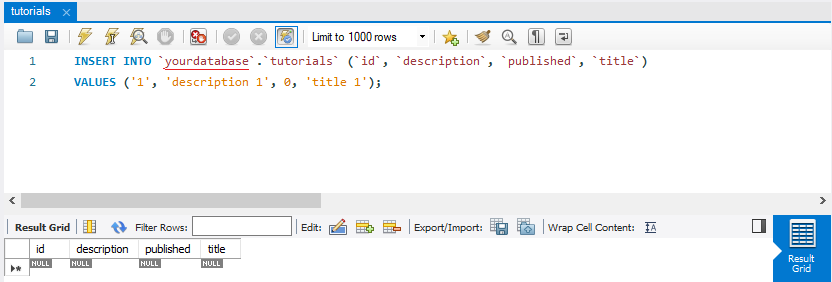
验证一下服务是否正常工作，在浏览器中访问 http://localhost:8080/api/tutorials
创建和配置 OpenXava 项目
使用 OpenXava Studio 创建一个新的 OpenXava 项目。
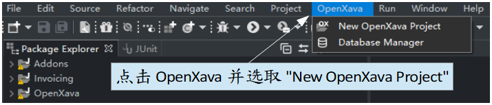
Project name: spring-boot-data-jpa
Group id: com.bezkoder

在 src/main/resources/META-INF 中的 persistence.xml 文件中添加 MySQL8 的 dialect。
<property name="hibernate.dialect" value="org.hibernate.dialect.MySQL8Dialect"/>
在 src/main/webapp/META-INF文件夹中配置 context.xml 文件。注释 HSQLDB Resource，并使用 MySQL 的资源並使用您的URL、用户名和密码。
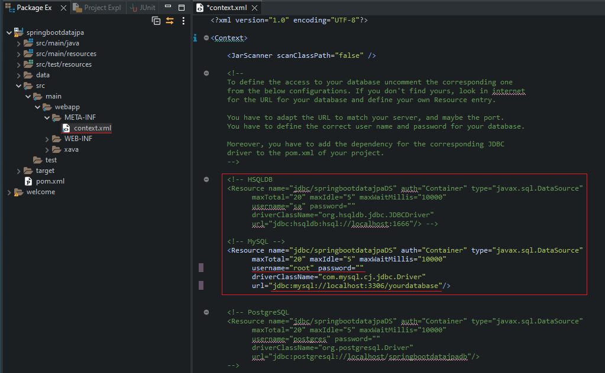
替换 application.properties 并将其它文件复制到 Spring Boot 项目中
我们将使用一种方法将 OpenXava 集成到 Spring Boot 应用程序中。首先，创建使用 @Configuration 注解的新类，用于替换 application.properties 文件。为此，请在 com.bezkoder.spring.datajpa 包中创建一个名为 AppConfig 的类。在 dataSource() 方法内，定义数据库连接配置（URL、用户名、密码）、要扫描的实体和存储库，例如：
package com.bezkoder.spring.datajpa;
import java.util.Properties;
import javax.sql.DataSource;
import org.springframework.context.annotation.Bean;
import org.springframework.context.annotation.Configuration;
import org.springframework.data.jpa.repository.config.EnableJpaRepositories;
import org.springframework.jdbc.datasource.DriverManagerDataSource;
import org.springframework.orm.jpa.LocalContainerEntityManagerFactoryBean;
import org.springframework.orm.jpa.vendor.Database;
import org.springframework.orm.jpa.vendor.HibernateJpaVendorAdapter;
import org.springframework.transaction.annotation.EnableTransactionManagement;
@Configuration
@EnableJpaRepositories("com.bezkoder.spring.datajpa.repository")
@EnableTransactionManagement
public class AppConfig {
@Bean
public DataSource dataSource() {
DriverManagerDataSource dataSource = new DriverManagerDataSource();
dataSource.setDriverClassName("com.mysql.cj.jdbc.Driver");
dataSource.setUrl("jdbc:mysql://localhost:3306/yourdatabase");
dataSource.setUsername("root");
dataSource.setPassword("");
return dataSource;
}
@Bean
public LocalContainerEntityManagerFactoryBean entityManagerFactory() {
LocalContainerEntityManagerFactoryBean entityManagerFactory = new LocalContainerEntityManagerFactoryBean();
entityManagerFactory.setDataSource(dataSource());
entityManagerFactory.setPackagesToScan("com.bezkoder.spring.datajpa.model");
entityManagerFactory.setPersistenceUnitName("com.bezkoder.spring.datajpa.model");
HibernateJpaVendorAdapter vendorAdapter = new HibernateJpaVendorAdapter();
vendorAdapter.setDatabase(Database.MYSQL);
vendorAdapter.setDatabasePlatform("org.hibernate.dialect.MySQL8Dialect");
entityManagerFactory.setJpaVendorAdapter(vendorAdapter);
entityManagerFactory.setJpaProperties(hibernateProperties());
return entityManagerFactory;
}
private Properties hibernateProperties() {
Properties properties = new Properties();
properties.setProperty("hibernate.hbm2ddl.auto", "update");
properties.setProperty("hibernate.dialect", "org.hibernate.dialect.MySQL8Dialect");
return properties;
}
}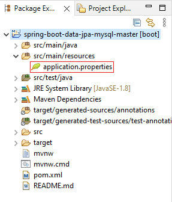
@SpringBootApplication
public class SpringBootDataJpaApplication extends SpringBootServletInitializer {
public static void main(String[] args) throws Exception {
SpringApplication.run(SpringBootDataJpaApplication.class, args);
}
}
<packaging>war</packaging>
<dependencies>
...
<dependency>
<groupId>org.openxava</groupId>
<artifactId>openxava</artifactId>
<version>7.1</version>
</dependency>
</dependencies>
<build>
<finalName>springbootdatajpa</finalName>
</build>
- src/main/resources 中的所有文件和文件夹。
- 位于 src/main 中的 webapp 文件夹。
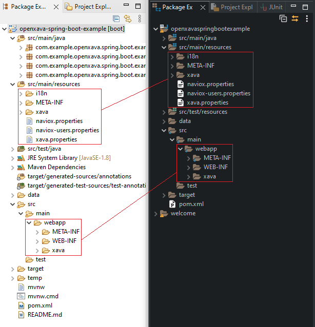
非必要： 在 src/main/resources 文件夹中修改 naviox.properties 文件，将 autologinUser 和 autologinPassword 行中的 # 删除以自动登录。
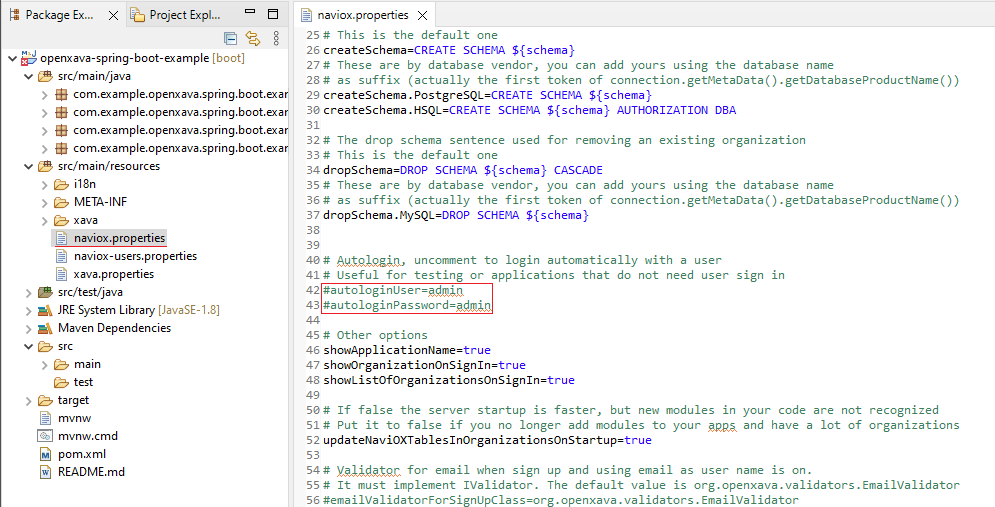
到現在，您的项目应该已经做了这些更改。
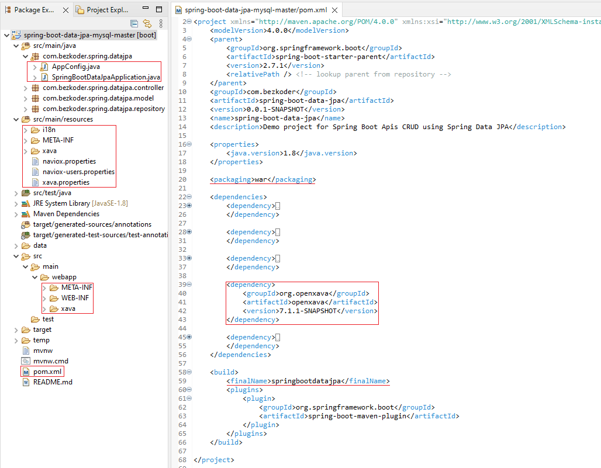
运行应用程序
在运行应用程序之前，请确保已经配置了 JAVA_HOME，并按照以下步骤：
- Maven > update project
- Maven clean
- Maven package
将 springbootdatajpa.war 从 target 文件夹复制到 Tomcat 9 安装目录下的 webapp 文件夹中，并在 bin 文件夹中运行 startup.bat。
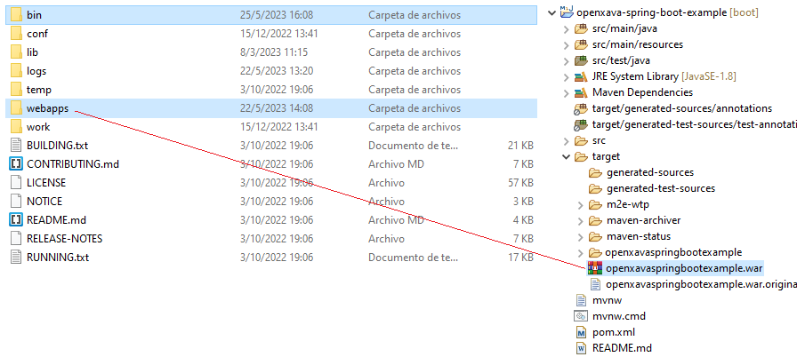
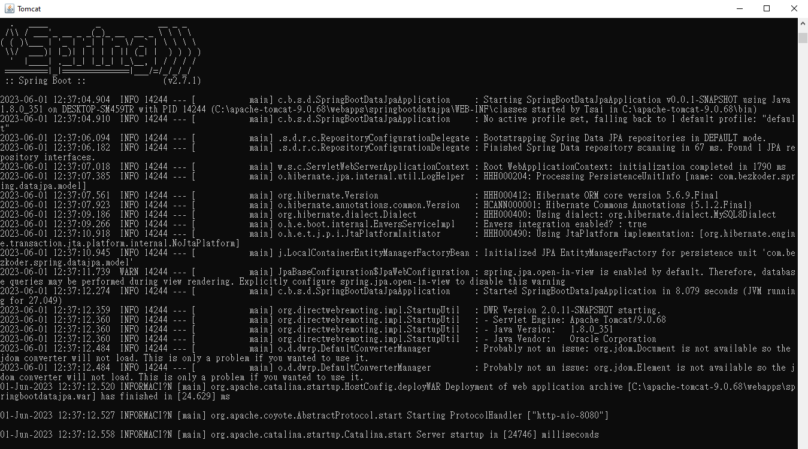
在浏览器中打开以下网址以開啟 OpenXava 应用程序（如果未修改 naviox.properties，请使用 admin/admin 登录）：
http://localhost:8080/springbootdatajpa
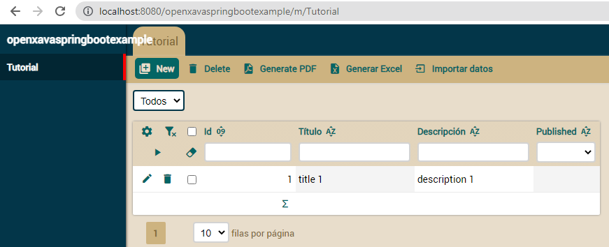
利用 OpenXava 根据项目的实体自动生成视图，以进行 CRUD 操作。
验证 Spring Boot 项目的服务是否正常运行： http://localhost:8080/springbootdatajpa/api/tutorials
您会发现返回的不再是 JSON，而是 XML。这是由于 OpenXava 所带 JasperReports 库中的一个错误导致的。在本示例中，我们将通过排除该库的一个依赖项來暂时解决此问题。但在生产环境中，不建议这样做：
<dependency>
<groupId>org.openxava</groupId>
<artifactId>openxava</artifactId>
<version>7.1.1</version>
<exclusions>
<exclusion>
<groupId>com.fasterxml.jackson.dataformat</groupId>
<artifactId>jackson-dataformat-xml</artifactId>
</exclusion>
</exclusions>
</dependency>
如果您希望在 URL 中去掉 springbootdatajpa，只需将位于 webapps 文件夹中的 springbootdatajpa.war 文件重命名为 ROOT.war。这样，您可以通过 http://localhost:8080 访问 OpenXava 应用程序，并通过 http://localhost:8080/api/tutorials 访问服务。